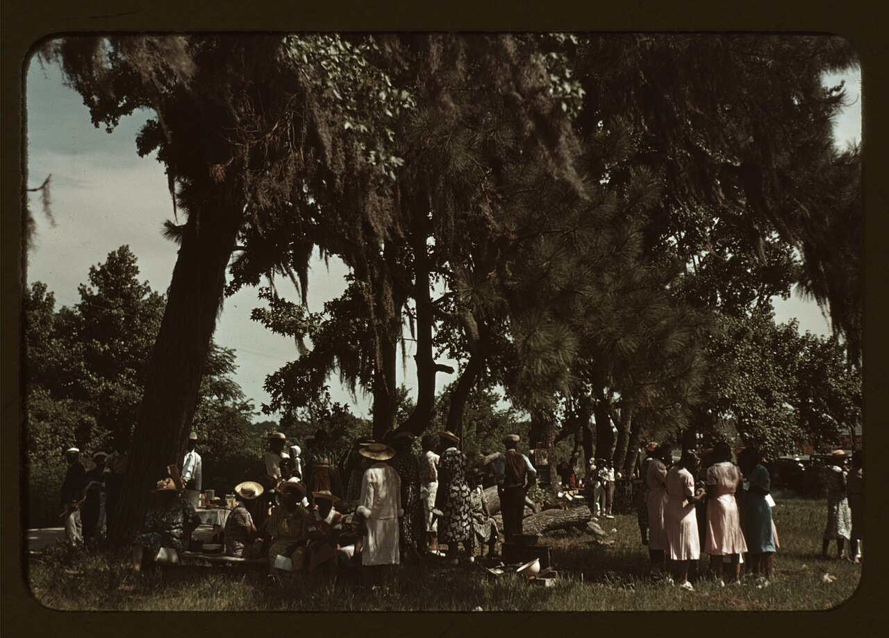
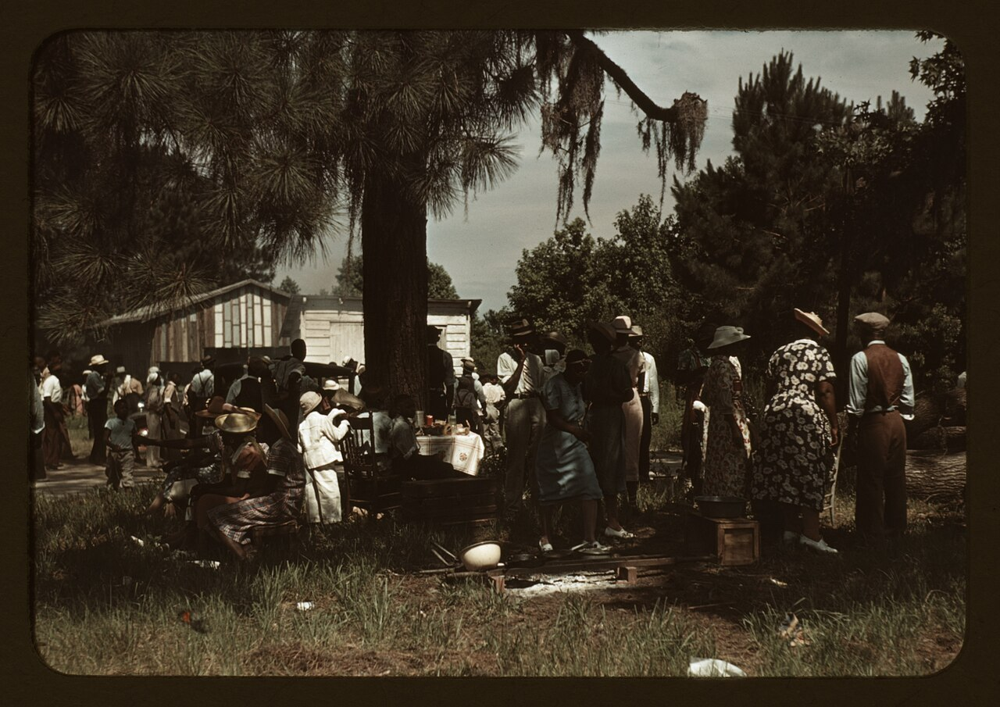
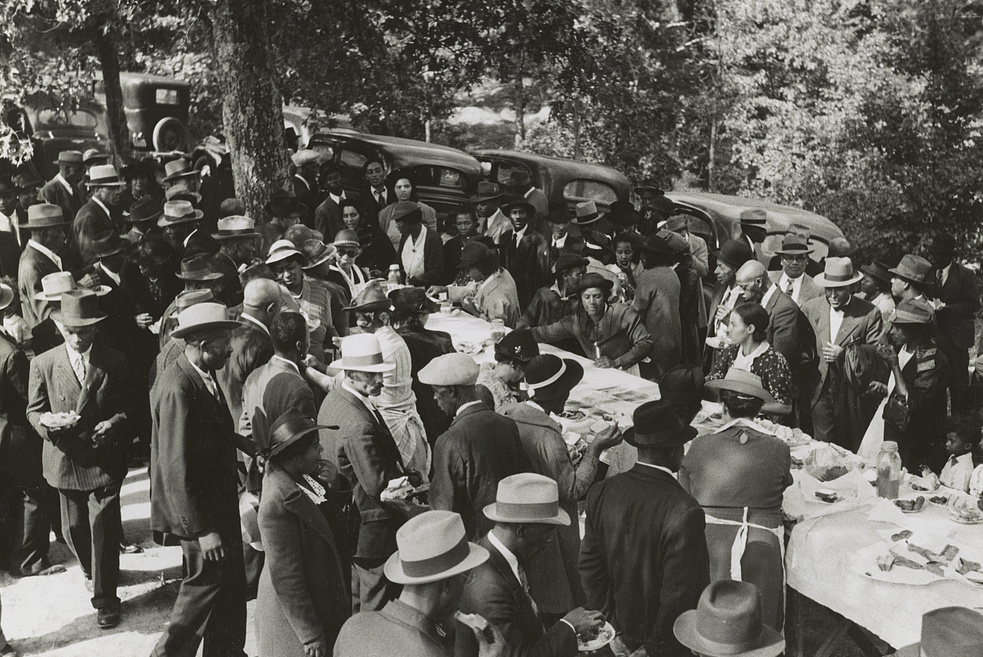
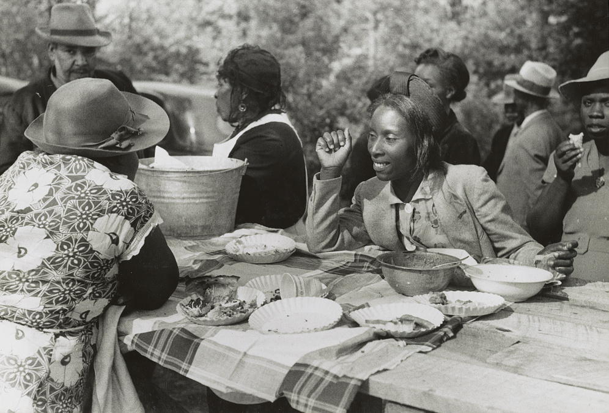

pig artThe FSA photographs of Carolina eating
also: Marion Post Wolcott in the Carolinas · FSA/OWI Carolina photographs · the 1939 Farm Security Administration series

The Farm Security Administration — a New Deal agency for rural poverty — kept photographers on the road from 1935, and their negatives went to the Library of Congress as federal work, free of copyright. Marion Post Wolcott worked North and South Carolina in 1939. What survives of Carolina eating is the occasion rather than the pit: a corn shucking at Tally Ho, near Stem in Granville County, North Carolina, with the tables that followed it; ministers and deacons at an outdoor picnic near Yanceyville; and a Fourth of July on St. Helena Island, South Carolina, shot on Kodachrome, which was new.
Tally Ho, Granville County, November 1939
A corn shucking was a work party: neighbours came, shucked a farmer's crop, and were fed. Wolcott photographed one at Uncle Henry Garrett's place near Stem. The men sit on kitchen chairs in a chest-high drift of shucks with the crib behind them, hats on, working through the pile.
The agency's own caption sheet says who ate when, and the project reproduces its wording because the arrangement is the fact: 'White women don't go to Negro shucking to help with the cooking but white men are fed by Negro women just the same as at other shucking week previous at Mr. Fred Wilkins' home.' A second frame is captioned 'The Negro tenants and neighbors eating dinner after the white men have finished.' It shows a long white-clothed table, ten or twelve men at it, glasses and plates and a big enamel basin at the near end. Two sittings, in that order, at a meal the second sitting had cooked.
{kind=link}

{kind=link}

{kind=link}

{kind=link}

{kind=link}
St. Helena Island, July 1939
The FSA shot most of its work in black and white and a small part on Kodachrome, a colour film then a few years old. Wolcott's St. Helena Island Fourth of July is in that colour set, which is why these frames look nothing like the rest of the period.
Under pines hung with Spanish moss, a crowd stands around a cloth-covered table and a scatter of washtubs, pots and crates; one frame takes in a Texaco filling station behind the flag. The catalogue calls it a Fourth of July celebration and a Fourth of July picnic. It does not call it a barbecue.

{kind=link}

{kind=link}

{kind=link}
What is not in the file
No photograph in the Carolina part of this collection that reached Wikimedia Commons is captioned as a barbecue, and none shows a hog on a pit. The agency's photographers caught Carolina barbecue only in its surroundings: the work party, the church meeting, the holiday crowd, the table afterwards. Two frames from near Yanceyville in Caswell County are captioned as an outdoor picnic held during the noon intermission of an all-day meeting of ministers and deacons — the church dinner, mid-century, in a field.
Inference — that is a fact about the photographers' brief rather than about the food. The FSA sent people to document rural poverty and federal relief, so a camera went where a committee met or a crop came in. An all-night pit in a shed behind a store was nobody's assignment. The pictures that do exist of a Carolina hog on a pit come later, from restaurants and from towns, and are mostly still in copyright.
A caution on the captions: the descriptions carried with these files are the agency's, written in 1939, and they use the racial vocabulary of that year. They are quoted rather than rewritten so that what the file says and what the file shows can be read against each other.

{kind=link}

{kind=link}
Facts
| kind | photograph |
|---|---|
| state | both |
| region | The Carolinas, North Carolina, South Carolina, The Lowcountry |
| links | Farm Security Administration photographs by Marion Post Wolcott — Wikimedia Commons |
| confidence | medium · needs verification · updated 2026-09-16 |
Its kin
Who points back
Pictures
Sources
- Farm Security Administration / Office of War Information photograph collection · link
- Wikimedia Commons · link
- Black Smoke: African Americans and the United States of Barbecue — Adrian Miller, 2021 · link
Where it came from: Cited a source we name · Harvested pulled from an open dataset · Tradition what the tradition says, hedged · Inference this project's reasoning · Field somebody stood there. This record as JSON.